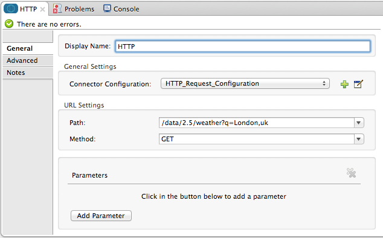
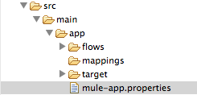
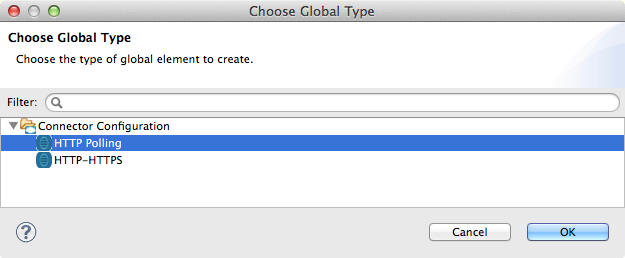

Consuming a REST API
When you need to be able to consume a REST API from within a Mule application, you can do so by configuring an HTTP Request Connector. This document describes how to prepare a request, then call a REST API, and how to work with its response.
| Note that if your use case involves connecting to the same REST API many times, or if you are working with an API with complex authentication protocols, you may find that developing your own Anypoint Connector is a more effective, reusable solution. See Anypoint Connector DevKit for more details about building connectors. |
Basic Anatomy
In its simplest incarnation, a Mule application set up to consume a REST API contains:
-
One or more message processors configured to build your request
-
An HTTP request connector configured to call the REST API
-
One or more message processors configured to accept and process the response

The portions of your application that build the request and process the response can be configured to meet the needs of your use case. This document focuses on the central step: calling the REST API with an HTTP connector.
Minimum Configuration
When consuming a REST API you first need to know some minimum information, which you can generally acquire by visiting the APIs documentation.
-
Does the API require authentication?
If the API requires basic authentication, then configuring an HTTP endpoint to consume the API is possible. If the API uses complex authentication such as OAuth, consider building a custom connector with Anypoint Connector DevKit. -
What is its base URL?
You need the base URL to configure the outbound HTTP endpoint address to point to your API. -
What scope does the API allow you to access?
Based on your authentication credentials with the API, your application calls may be limited to only GET requests on certain resources, or limit you from accessing other resources at all. -
Which resources within that scope you want to access?
You need to know the exact path of the resources you want to access so that you can include them in the configuration of the outbound HTTP endpoint. -
What methods does the API support for each of those resources?
The default method for the HTTP outbound endpoint is POST, so you need to be aware of what methods are supported for the resource and, if necessary, change this default to the method you need to make a successful call. -
What input is the API expecting? (JSON, XML, etc.)
For POST and PUT calls, the API almost always requires a very specific input formatted according to its schema. -
What output will the API produce?
After the HTTP outbound endpoint in your flow, you need message processors to accept the response from the API and translate into a format that you can use. -
Does the API use redirects?
If it does, be sure to enable redirects in your HTTP outbound endpoint. -
What headers are required for the method you are using?
Note that GET requests may not need special headers, but POST, PUT, and DELETE requests almost always require headers. -
What error codes can you expect?
You might want to write the error codes into the subsequent steps of your application to deal with all possible responses from the API.
Simple Example
For example, if you want to consume the OpenWeatherMap API, access the documentation to determine the basic information that you need. In this example:
-
The API doesnt require authentication
-
The base URL is http://api.openweathermap.org/data/2.5/
-
The scope is limited to a few resources, including weather, forecast, etc., and the only method that is available on those resource is GET
-
The sample API requests available in the documentation reveal that, if you want to retrieve the information about the current weather in London, UK, your API request looks like this:
1
http://api.openweathermap.org/data/2.5/weather?q=London,uk
This URL uses the following format:
| Protocol | API Base URL | Resource Path | Query Parameters |
|---|---|---|---|
|
|
|
|
To implement this call in your Mule application, configure your HTTP request connector as described below. (Note that this example shows only the configuration of this HTTP Connector. In order to make this example work, you would need to, at minimum, to configure an HTTP Listener to trigger a message in the flow and at least one message processor to accept the response. See the full examples for more information.)
-
Open the Properties Editor of the HTTP outbound endpoint.
-
Ensure the exchange pattern is set to request-response.
-
Delete the contents of the Host field.
-
Select the Method you want to use from the drop-down list. This example uses GET.

-
Open the Advanced tab. Enter your API call into the Address field

-
Click any blank area of the canvas to Save your configuration changes.
Note that if the API you are calling requires HTTPS or basic authentication, involves redirects, or requires a specific Content-Type header be specified, the HTTP connector supports additional configuration to manage these details.
1
<http:outbound-endpoint exchange-pattern="request-response" method="GET" address="http://api.openweathermap.org/data/2.5/weather?q=London,uk" doc:name="HTTP"/>
The response, in this example, is in JSON.
1
2
3
4
5
6
7
8
9
10
11
12
13
14
15
16
17
18
19
20
21
22
23
24
25
26
27
28
29
30
31
32
33
34
35
36
37
38
39
40
{
"coord": {
"lon": -0.13,
"lat": 51.51
},
"sys": {
"message": 0.0506,
"country": "GB",
"sunrise": 1396589257,
"sunset": 1396636746
},
"weather": [
{
"id": 801,
"main": "Clouds",
"description": "few clouds",
"icon": "02d"
}
],
"base": "cmc stations",
"main": {
"temp": 287.46,
"pressure": 1010,
"temp_min": 285.93,
"temp_max": 289.26,
"humidity": 73
},
"wind": {
"speed": 2.06,
"gust": 4.11,
"deg": 310
},
"clouds": {
"all": 24
},
"dt": 1396633274,
"id": 2643743,
"name": "London",
"cod": 200
}
Depending on the needs of your application, you can use DataMapper or a JSON-to-Object transformer to transform this response into another format from which you can extract information, route messages, etc.
Configuring Dynamic Requests with MEL Expressions
In the example above, the request was hardcoded in the URL:
1
http://api.openweathermap.org/data/2.5/weather?q=London,uk
Most use cases require that the call to the API change dynamically based on some data in the message. For example, in the following GET request example, the call instructs Mule to extract the city name from the payload of the message.
1
http://api.openweathermap.org/data/2.5/weather?q=#[payload]
In more complex cases, you might want to query a different resource depending on data in your message properties or in variables that you set earlier in your flow. For example:
1
http://api.someservice.com/#[flowVars['resource_path']]?#[flowVars['query_param']]=#[flowVars['query_param_value']]
Or, you might wish to dynamically configure the calls method (GET, POST, etc.) based on logic performed earlier in your flow. To override the method set in the HTTP outbound endpoint, use a Property transformer before the endpoint to explicitly set the http.method property (see instructions below).
Insert a set-property element in your flow before your HTTP outbound endpoint and configure it to set the http.method property. If set, Mule uses this property to override the method attribute set on the HTTP outbound endpoint.

This sample configuration assumes that you have configured a flow variable earlier in your flow called `method-override `with logic to populate the value of that variable with a valid method.
Insert a set-property element in your flow before your HTTP outbound endpoint and configure it to set the http.method property. If set, Mule uses this property to override the method attribute set on the HTTP outbound endpoint.
1
<set-property propertyName="http.method" value="#[flowVars['method-override']]" doc:name="Property"/>
This sample configuration assumes that you have configured a flow variable earlier in your flow called method-override with logic to populate the value of that variable with a valid method.
Handling HTTP Content-Type and Encoding
When you send a POST request body, Mule adheres to the following rules regarding Content-Type and encoding.
Sending
For a String, char[], Reader, or similar |
|
For binary content |
Encoding is not relevant. Mule sets
|
Working with Custom Headers
Many APIs require that you pass custom headers along with your requests, such as your developer key. You can set these headers on your messages by adding them as properties before your message reaches the HTTP outbound endpoint.
For example, if the API you are consuming requires that you register for a developer key, then pass that key as a header on your requests using the header name accessKey, you can add a property to set this header, as shown below.
-
In the HTTP connectors properties editor click the Add Parameter button, this will create a few new fields that correspond to a new parameter. By default this will create a query-param, but you can pick other types of parameters from the dropdown menu, for this example pick header. For the headers name, type
accessKeyand for its value, provide your key.
Note that you can also configure the value of the custom header using a MEL expression if you want to define the value dynamically (see image below).

You can also use a property placeholder, then define the value in your mule-app.properties file.
1
<set-property propertyName="accessKey" value="897s44783kdg94545" doc:name="Property"/>
Note that you can also configure the value of the custom header using a MEL expression if you want to define the value dynamically (see image below).
1
<set-property propertyName="accessKey" value="#[sessionVars.accesskey]" doc:name="Property"/>
You can also use a property placeholder, then define the value in your mule-app.properties file.
1
<set-property propertyName="accessKey" value="${access.key}" doc:name="Property"/>
Working with Security Requirements
| Note that if your use case involves working with an API with complex authentication protocols such as OAuth, you can build your own Anypoint Connector to consume the API. See Anypoint Connector DevKit for more details about building connectors. |
HTTPS
If the REST API you are consuming requires incoming requests arrive via HTTPS, you can configure a global HTTPS connector in your Mule application, then reference the connector in your outbound endpoint.
First, you must create a keystore file to certify the communication. This can be done using the keytool provided by Java, found in the bin directory of your Java installation. Navigate to this directory on your machine using the command line, then execute the following command to create a keystore file:
1
keytool -genkey -alias mule -keyalg RSA -keystore keystore.jks
You are prompted to create two passwords; remember the passwords! The command creates a jks file in the local directory called keystore.jks.
-
If you are using Mule Studio, drag this file into the `yourappname/src/main/resources `directory in Mule Studios Package Explorer.
-
If you are using Standalone, place this in the
MULE_HOME/confdirectory if to be used across multiple applications, or in theyourappname/src/main/resourcesdirectory if you are using this just within this application.
Now, you can reference this keystore in a global HTTPS connector, which, in turn, is referenced by the HTTP outbound endpoint within your flow.
-
Open the Properties Editor of the HTTP endpoint in your flow to ensure that Enable HTTPS is checked.
-
Click the green plus sign next to the Connector Configuration field to create a global connector.

-
Select HTTP-HTTPS, then click OK.
-
Click the Security tab.
-
Enter the Path, Key Password, and Store Password (the passwords your remembered when creating your keystore file) as per the example below, then click OK.
image"/https://developer.mulesoft.com/docs/download/attachments/122750892/keystore-path.png?version=1&modificationDate=1421450181098[image]
1
2
3
<https:connector name="httpsConnector">
<https:tls-key-store path="keystore.jks" keyPassword="YOURPASSWORD" storePassword="YOURPASSWORD"/>
</https:connector>
Note that if you placed your keystore in the yourappname/src/main/resources directory then you can just specify the name of the keystore as the value of the path. Otherwise, if the keystore is located in the MULE_HOME/conf directory, specify "/keystore.jks" as the path.
Basic Authentication
If the REST API that you are consuming requires that you pass basic authentication credentials, you can supply them within the outbound HTTP endpoint configuration.
-
Click the HTTP Settings tab in the Properties Editor of your HTTP outbound endpoint, then enter your API access credentials User and Password as shown. Your application passes these credentials with the API call at runtime.
Note that you can also replace these with property placeholders and define the properties in your mule-app.properties file.
-
Enter placeholder values in the Basic Authentication fields, as shown below.
-
Navigate to your mule-app.properties file under src/main/app in the Package Explorer.

-
Define the placeholders here, as shown below.
Add the user and password attributes to your http:outbound-endpoint configuration, as shown below.
1
<http:outbound-endpoint exchange-pattern="request-response" method="GET" address="http://www.targetAPI.com/path" doc:name="HTTP" user="myusername" password="mypassword"/>
Rather than hardcode the values of your credentials, you can define them as property placeholders.
1
<http:outbound-endpoint exchange-pattern="request-response" method="GET" address="http://www.targetAPI.com/path" doc:name="HTTP" user="${service.username}" password="${service.password}"/>
Open (or create, if you dont have one) the mule-app.properties file in your applications src/main/app folder, then define the properties in the file:
1
2
service.username=myusername
service.password=mypassword
Polling a REST API
| Although the HTTP connector has built-in polling capabilities (described below), you can, instead, configure a Poll scope, then place your HTTP endpoint within it. Using a Poll scope allows you to take advantage of more robust polling functionality such as watermarking and scheduling with cron expressions. |
The HTTP connector supports polling an HTTP URL to invoke a REST API and generate messages from the result. This is useful for pull-only web services and situations where you want an API GET request to kick off processing in your flow.
To configure your application to poll a REST API, configure an inbound HTTP endpoint with a polling HTTP connector reference.
-
Open the Properties Editor of the HTTP endpoint. Click the green plus sign next to Connector Configuration.
-
In the Choose Global Type window, select HTTP Polling.

-
You can configure a polling connector with all the same optional attributes as a regular HTTP-HTTPS connector, with the addition of Polling Frequency (located in the Polling tab), and flags for processing the ETag header and Discarding Empty Content (both false by default).

The ETag, or entity tag, is HTTPs cache control mechanism. APIs that support it will provide an HTTP header with an ETag value that represents a unique version of the resource located by the request URL. After successful processing when polling a resource, you might not want to process the same resource again if there are no changes. Activating the ETag checkbox instructs Mule not to send two requests with the same ETag.
The following example illustrates how to configure a global http:polling-connector.
1
2
3
4
<http:polling-connector name="HTTP_Polling" cookieSpec="netscape" validateConnections="true" pollingFrequency="1000" sendBufferSize="0" receiveBufferSize="0" receiveBacklog="0" clientSoTimeout="10000" serverSoTimeout="10000" socketSoLinger="0" checkEtag="false" discardEmptyContent="false" doc:name="HTTP Polling"/>
<flow name="Example_Flow1" doc:name="Example_Flow1">
<http:inbound-endpoint exchange-pattern="one-way" host="localhost" port="8081" doc:name="HTTP" connector-ref="HTTP_Polling"/>
Note that the checkEtag attribute (false by default) can be set to true if you want to enable HTTPs cache control mechanism. APIs that support entity tags will provide an HTTP header with an ETag value that represents a unique version of the resource located by the request URL. After successful processing when polling a resource, you might not want to process the same resource again if there are no changes. Setting checkEtag to true instructs Mule not to send two requests with the same ETag.
Tips
-
Follow redirects: If you make a request to an API using GET, and the API responds with a
redirectLocationheader, configure your HTTP connector to follow redirects so as to push the request to the redirect URL. This only works for GET requests, as you cannot automatically follow redirects for a POST request.-
In Studio, click the Follow Redirects checkbox on the Advanced tab of the HTTP connectors Properties Editor.
-
In XML, add the attribute
followRedirects=``"true".

-
-
POST requests and the API schema: If you are calling a REST API with a POST request, you need to obtain the API schema for the POST and match that format in the payload of the Mule message that you send to the API with your request. A good way to do this is to insert a DataMapper transformer before the HTTP outbound endpoint in your flow, then use the APIs schema in to define the output format.
See Also
-
See some example applications that consume REST APIs.
-
Refer to the reference documentation for the HTTP connector.
-
If the HTTP connector doesnt meet your needs, consider building a connector with the Anypoint Connector DevKit.